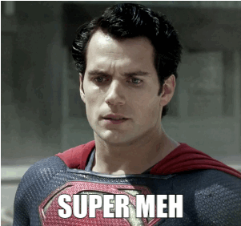

By Hugo Agbonon (@codeheroics)
Arrow functions, let, const, Proxies, Maps, Sets, Template literals, Destructuring, Rest parameters, Default parameters, Spread, Generators, Symbols, Iterators, Classes, Modules, Promises…
Should be equally awesome, right?
You've heard about it!
@parisjs){...this.props}Really contains...

The annual release schedule means smaller releases.
ES2016 is so small because only two features were at maturity stage 4
https://github.com/tc39/ecma262#current-proposals
5 stages to determine a proposal's advance
An new idea is proposed. It is added after a preliminary review.
Map-Set.prototype.toJSON are here
Decorators (@connect) are here
At this point, it is likely it will end up being in the release. Modifications from here are incremental.
Object rest/spread properties ({...this.props}) are here.
The feature and its implementation are mostly ready
Async functions (async/await) are here.
The feature is complete and will be present in the next ECMAScript spec release.
Object.observe, once depicted as a revolution, was at stage 2 when it got killed.
(And if you're wondering, Babel will stop supporting them the second they're dropped)
Lots of great features are coming to JS.
It doesn't matter if they aren't in ES2016, they'll be there next year
You can use most of the shiny new stuff now... But be careful when you use experimental features